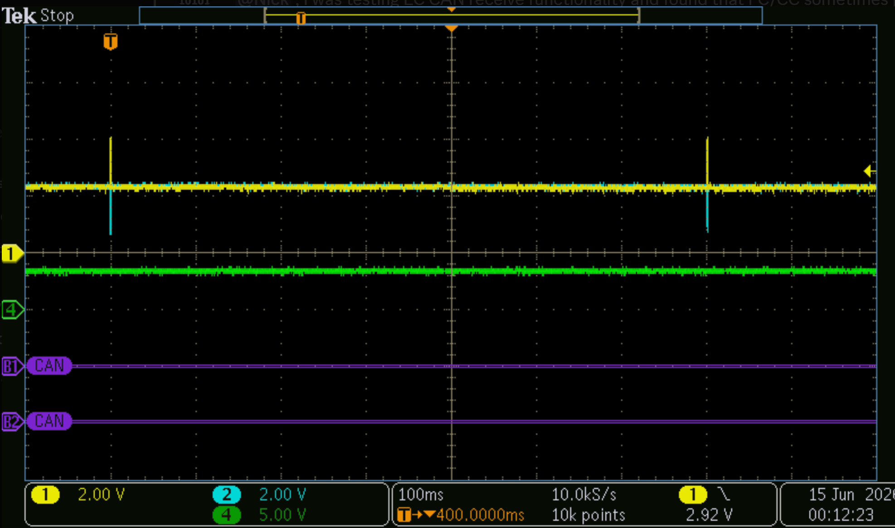
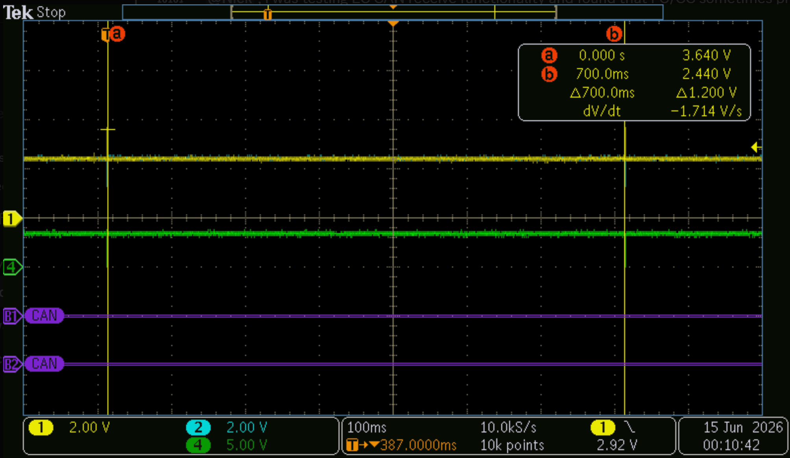
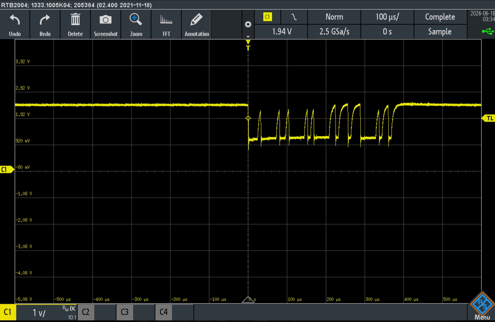
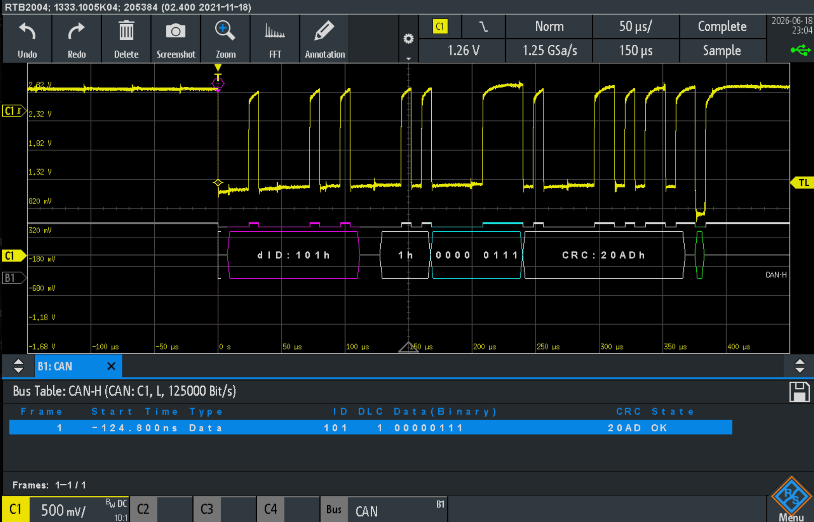

Improved LED logic
The Problem:
When Matvey was testing communication via my STM32 code, he observed that CAN messages were being sent twice with one button press exactly 700 ms apart


after glancing over the STM32 code, I noticed the main two issues
void PB_Process(uint8_t button){
// CC exclusive code; won't run unless CC is selected using SELECTED_BOARD
#if SELECTED_BOARD == CC_BOARD
// PB1/2/3 means go to floor 1/2/3
if(button == F1_BUTTON_PRESS)
{
CAN_ByteTransmit(MY_ID, FLOOR_1);
// illuminate PB LED for visual confirmation
blinkLED(PB1_LED_GPIO_Port, PB1_LED_Pin, 200);
current_floor = 1;
}
// other code
}
The first was with the fact that the function above that handled button preses (on stm32 shields) would stop the program for 200 ms
The second was the implementation in main which would blink the green LED when a CAN message was sent. See below:
// Transmit messages
// check if input present
if(BUTTON != NO_BUTTON_PRESSED)
{
// temporarily store before processing
// avoids weird interrupt flags (like if BUTTON is updated before msg read)
uint8_t pressed_button = BUTTON;
// reset BUTTON since it's input has been captured
BUTTON = NO_BUTTON_PRESSED;
// process button
PB_Process(pressed_button);
// blink green LED briefly for transmit successful
blinkLED(GPIOA, Green_LED_Pin, 500);
}
The blinkLED(GPIOA, Green_LED_Pin, 500) line delayed it by another 500 ms
So... 200 ms in PB_Process(uint8_t button) and another 500 ms in main... Lines up with the
700 ms Matvey R. saw
The fix:
I rewrote the logic to use HAL_GetTick() instead of HAL_Delay(). Delay halts every action on the mcu, while getTick() with a few if statements can be non-blocking.
First, an LED timer struct was defined. See the implementation below:
// define a struct for non-blocking LED logic
typedef struct {
GPIO_TypeDef* port;
uint16_t pin;
uint8_t active;
uint32_t off_time;
} LED_Timer;
// enable the four LEDs (three floors and green blink for CANTx)
LED_Timer greenLedTimer = {GPIOA, Green_LED_Pin, 0, 0};
LED_Timer F1_Req_LED = {PB1_LED_GPIO_Port, PB1_LED_Pin, 0, 0};
LED_Timer F2_Req_LED = {PB2_LED_GPIO_Port, PB2_LED_Pin, 0, 0};
LED_Timer F3_Req_LED = {PB3_LED_GPIO_Port, PB3_LED_Pin, 0, 0};
Then the two functions to implement it.
// function to blink the LED without blocking (HAL_Delay is my nemesis)
// allows you to select what LED to blink and for how long
void LED_BlinkStart(LED_Timer* led, uint32_t duration_ms)
{
// enable the LED via the defined port and pin (LED_Timer struct) and set it
HAL_GPIO_WritePin(led->port, led->pin, GPIO_PIN_SET);
// pointer to the LED_Timer struct to enable the 'active' bit in the struct
led->active = 1;
// pointer to the LED_Timer struct to set the desired delay time
// if tick is 100 and delay is 200, off_time is 300; Then when tick is 300, LED will be turned off via blinkUpdate below
led->off_time = HAL_GetTick() + duration_ms;
}
This function uses the user inputted delay value and adds it to HAL_GetTick() and then
compares it in the function below:
// function to update the state of the LED without blocking (HAL_delay is my nemesis)
void LED_BlinkUpdate(LED_Timer* led)
{
// check if the LED is active
if(led->active)
{
if((int32_t)(HAL_GetTick() - led->off_time) >= 0)
{
// turn the led off
HAL_GPIO_WritePin(led->port, led->pin, GPIO_PIN_RESET);
// disable the a'ctive' bit in the struct
led->active = 0;
}
}
}
In this function, it checks the current HAL_GetTick vs the LED off time in
if((int32_t)(HAL_GetTick() - led->off_time) >= 0) and turns the LED off once
completed
Now, the LEDs will blink without the delay function, creating a non-blocking implementation of it
Finished and tested CAN bus cable
Finished making the CAN bus cable that the LiF group will be using for the elevator
The cable had one mistake (soldered CANH to pin 8 instead of 7 by accident) but fixed that. Also noticed that without all nodes connected on the line, the signal integrity was a bit rough.
Attached are the images with their relevant captions regarding what was happening

